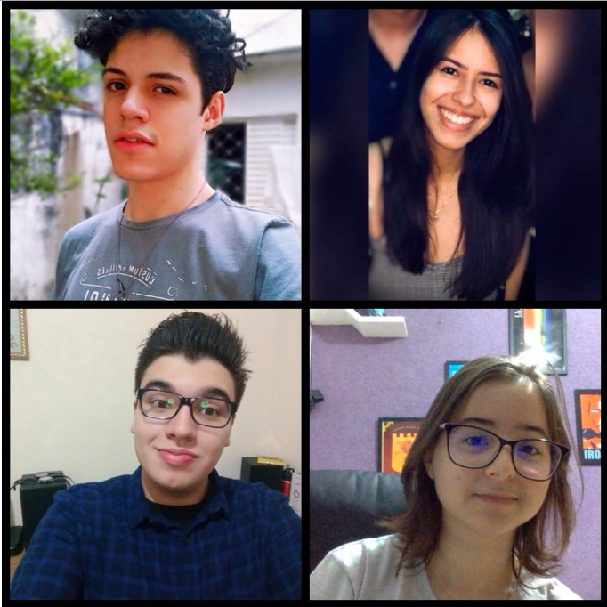
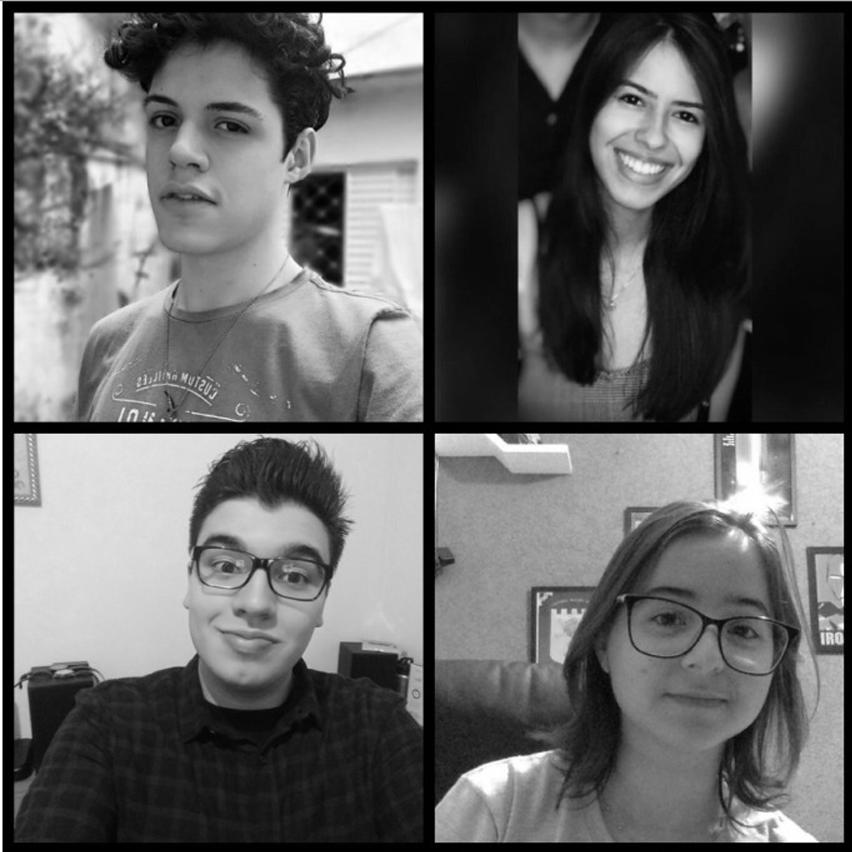
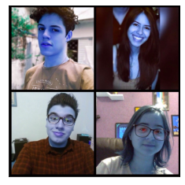

Imagem e Captura de Vídeo
Codificação de Sinais Multimídia - Laboratório 2
Primeiramente, os trabalhos com o Google Colab e o OpenCV, Notebook foram iniciados. Com isso, foi possível visualizar e alterar as resoluções das imagens, assim como, gravar imagem e vídeo pelo Colab. Na foto a seguir, temos os integrantes que compõem o GRUPO:

Foto-Montagem: AVATAR
Trevor: Matheus;
Patrick Estrela: Mayara;
Perry: Samya;
Makoto: Caíque
Processamento Básico nas Imagens e Vídeos
Imagens Originais

Versões em P&B
Para obter e visualizar as imagens na versão P&B, o seguinte código foi aplicado:
img_gray = cv.imread(os.path.join(image_path,'grupo4.jpg'), cv.IMREAD_GRAYSCALE)
Imagens com duas resoluções diferentes:

Nesta etapa, foi utilizado o resize() do OpenCV para mudar a resolução das nossas imagens P&B. Os seguintes parâmetros foram aplicados: fx=0.80, fy=0.80
Resolução dos Vídeos: 25% dos originais
Resolução dos Vídeos: 50% dos originais
Para obter e visualizar os vídeos com as resoluções desejadas, foi necessário importar as bibliotecas e especificar o caminho para acesso do vídeo original em “video_path”. Feito isso, utilizamos o HTML para a exibição no Colab.
Para mais detalhes sobre o código, clique no link da próxima seção.
Link do Notebook - (PARTE 3)
Imagem EXTRA: Leitura com cores trocadas

Fazendo todo o processo descrito anteriormente, o opencv (cv) com o imread() lê as cores trocadas. Para encontrar mais detalhes sobre do código, acesse o link apresentado anteriormente.
img = cv.imread(os.path.join(image_path,'grupo4.jpg'),cv.IMREAD_COLOR)